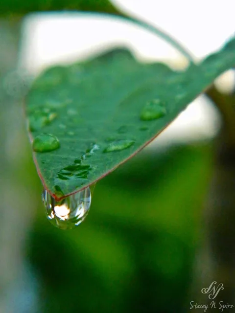

← All galleries
Close-Up & Details
Textures, drops of water, shapes, and small subjects that become worlds of their own.
9 selected photographs
← Back to portfolio
A single drop1 / 9
© Stacey Noelani Spirz · For viewing only. Want to use a photograph or order a print? Please contact me.
Swipe the photographs sideways or use the arrows. Tap the large image to see it full screen.
Keep exploring